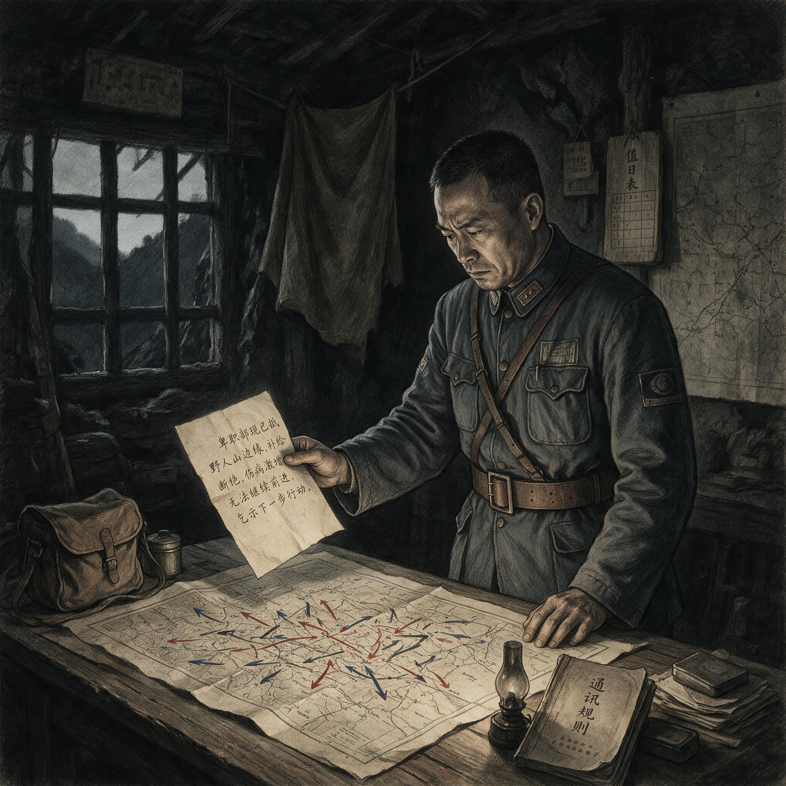

第 13 章
野人山：白骨铺成的归途
前方的树又密了一层。雾从谷底升起，像从腐土里长出的白毛，把前头的人影吞得只剩半个肩膀。行军纵队已经不能叫纵队了，只是一条断断续续的人链，在竹杖探出的窄痕里慢慢蠕动。

电报传递败退消息的瞬间
AI 生成插图，非史实影像。
没有人知道自己在哪张军用地图的哪一格，因为那张图本来就是错的。杜聿明第五军的参谋们在仰光陷落前最后一次核对坐标时，连密支那以北的等高线都标得含混不清。现在这些线条变成了脚下打滑的泥坡，变成了横在路中央的朽木，变成了每一个弯道之后似乎重复出现的同一条河。
这是1942年5月的缅北。中国远征军主力正朝着密支那方向北返。他们并非在逃命，按照军部的命令，这是转进。
然而命令里没有说明的是，密支那已经丢了。日军五十六师团在四月二十九日占腊戍之后，一路向北，几乎没有遇到像样的抵抗，五月八日便进了密支那城。第五军手里最后一条通往云南的公路，被一刀截断。
于是数万人的野战军掉进了公路和战线的缝隙里，前面只剩野人山。野人山的撤退不是一次败退。
这句话需要被反复确认，因为败退至少还承认战斗的存在、敌人的存在、方向的存在。而野人山的行军，是一场以整支野战部队为代价的体系性崩溃。
战斗远在身后，枪炮声已经稀落，最重要的敌人变成了树、雨、泥、蚂蟥、疟疾和饥饿。这支军队在北返之初仍有人员和枪械，但它的现代化程度不足以把它从丛林中完整带出去。
它缺少空中补给的通道，缺少可以信任的地图，缺少丛林生存的训练，缺少足够而可靠的电台，缺少对热带雨季的基本准备。它唯一不缺的，是士兵们继续向前走的意志。然而正是这种意志，使后来的结果更近于一场被体系拖向死亡的集体殉难。
北返的选择，在五月初的缅甸并非全无道理。日军正面追击的假象和迂回穿插的速度，让多数指挥官判断南线已经无路可退。腊戍失陷之后，远征军后方被拦腰截断，滇缅公路的终点变成一张废纸。
西退印度与北返云南，两条路线摆在面前。英军已经在四月下旬开始放弃仁安羌以南的阵地，曼德勒一线崩溃的速度超出了中国方面的估计。
史迪威在那段日子的日记里反复提到混乱、指挥缺席、英国人只想离开。他本人最终选择西路，带着一小队人徒步退往印度。斯利姆后来在《反败为胜》中评价缅甸第一阶段的失败时，用了更克制的词：盟军没有在正确的位置集中兵力，也没有一条真正被共同遵守的撤退计划。这句话落实在具体地理上，就是英军有英军的退路，中国军队有中国军队的命令。
蒋介石给杜聿明的命令是明确的：撤回云南。作为远征军第一路副司令官兼第五军军长，杜聿明执行了这一命令。新编第二十二师、第九十六师和军直属部队主力向北，试图经缅北丛林绕过密支那，进入滇西。
新编第三十八师师长孙立人则认为野人山不可通过，率部向西，沿英军撤往印度的路线退却。
两条路线的分叉，在五月上旬的雨雾中显得像一次战术分歧。到五月底，分歧变成了天壤之别。孙立人部于五月三十日前后抵达印度英帕尔方向，建制基本完整，装备未遭重大损失，甚至沿途收容了难民和英印散兵。
英军起初要求解除武装入境，后来经仁安羌被救英军将领的调解，新三十八师终于武装开进印度，还受到英军仪仗队的迎接。西退路线的终点有营房、有粮食、有后方。
北返的队伍没有后方。他们的后方在密支那陷落的那一刻消失了。杜聿明仍试图让部队绕开密支那，从更北的森林中寻路向东。这个设想需要几个条件：空中侦察和补给的接应，可靠的向导，准确的丛林地图，以及对部队体力和口粮的精确计算。这些条件当时几乎全不存在。
中国远征军进入缅甸后，后勤长期仰赖英缅政府的运输组织和有限的汽车、骡马，许多部队在四月下旬的混乱中已经断粮。美国志愿队和中国航空公司的飞机偶尔可以空投，但缅北的密林使空投几乎无法到达地面。军部与各师之间的电台联系时断时续，到了更深的山区，电台往往整天叫不通。地图上的小路在实地可能只是猎户季节性的痕迹，雨一泡就再也分不出来。第五军在中国军队序列中并非弱旅。
它是远征军中最接近于现代化的单位之一：装备了战车、汽车牵引的炮兵和大量骡马，行军时常常需要公路和宽阔土路。这些装备在平原地带构成优势，到了缅北的山林却反过来成为负担。汽车开不进羊肠小径，火炮不能拆成零件背走，骡马在泥沼中倒下后还会堵住已经窄得无法交错的路线。机械化程度越高，在这里就越依赖道路。而道路，恰好是这支军队最缺少的东西。
北返的选择因此从一开始就带着一种隐蔽的错位：一支被编成依赖道路的军队，正在放弃道路本身。
进入野人山的最初几天，部队还能维持行军队形。士兵们把步枪斜挎在肩上，用刺刀砍开藤蔓。每天的行程虽然因地形而大大缩短，但仍有继续前行的节奏。
口粮是从南边带上来的，每人每天十二两大米。这个数字在缅甸战役初期已经不算丰裕，但维持行军体力仍可勉强。军需官们把米袋按建制分发，各连司务长用竹筒量着下锅。
雨水开始频繁以后，米袋常常湿透，米粒在麻布里发胀。有的连把发霉的大米摊在雨衣上晾，米却越晾越黏。到五月下旬，十二两已经无以为继。
军部下令减半，每人每天六两。野人山的路其实不叫路。它只是一段又一段被脚踩出来的泥槽。雨季一来，泥槽变成齐膝的灰浆。骡马陷进去，几个人围着拽尾巴，骡子发出一阵短促的嘶叫，然后连鞍子一起沉进泥里。人从旁边绕过去，继续走。
有人在喘息中吸入腐叶的气味，那是一种甜腻的、令人作呕的发酵味。脚下的水是黑色的，表面上浮着一层油膜。山蛭从叶尖上掉下来，钻进衣领，吸饱了血就落到地上。
走路的人起初还互相查看，把蚂蟥从脖子里揪出来，用烟头烫。后来没人管了。蚂蟥吸饱了自然脱落，伤口继续渗血。一个小时后，新的蚂蟥又爬上来。
疾病比饥饿来得更早。疟疾在雨季的丛林中几乎是必然的。高热让士兵在行军途中突然倒地，嘴唇乌紫，牙齿打战。
没有奎宁，没有医生，甚至没有足够的水。各师的医官在渡河时丢失了药箱，有些药箱虽然还在，里面的药品已经在潮湿中结块失效。更普遍的病是痢疾。士兵们在路边蹲下，站起来时眼前发花，走不出几步又要蹲下去。
肠道被丛林的水和半生的野菜反复折磨，直到脱水和衰竭。患疟疾的人如果还能辨认方向，就由旁边的人架着走。疟疾发作过去后，他重新背上枪，继续挪动。
枪在此时已经成了累赘，但大多数人仍然没有丢下它。这不是因为军纪，而是因为枪是中国士兵身上最后的身份。丢掉枪的人很快就会发现，自己不再是一个士兵，只是一个饿着肚子在雨林里等死的人。
饥饿在六月初变成全员的。六两米的日子没维持几天，军部就再也发不出定量。
部队开始以芭蕉根、野薯、树皮和可食的野菜充饥。芭蕉根含水分多，煮烂以后有一股带苦味的黏稠味道，几乎没有任何营养。士兵们把芭蕉根切成薄片，放在铁盔里煮。有人把最后一小撮米和芭蕉根混在一起，做成一种稀薄的糊糊。
再往后，树皮成了主食。人把树干上较嫩的皮层剥下来，刮去外层，吃里面纤维较多的一层。那种东西嚼不烂，只能吞下去。
更晚一些，饿极了的人开始啃自己的皮带。牛皮在水里煮过之后变软，切成小块咽进肚里。胃被这些无法消化的东西填满，人仍然在瘦下去。
瘦到肋骨一根根凸出来，眼窝深陷，步子发飘。但没有人停下来。停下来就意味着承认自己属于这座森林。
死亡从这时起开始追上队伍。起初是零星的。有士兵靠坐在树根上，头垂向一边，脚还保持着行军的姿势。旁边的人以为他睡着了，推一推，才发现人已经凉了。
接着是成批的。有些人在夜间休息时死去，清晨号兵吹的已经不是什么起床号，而是被连长改成了一阵短促的哨音。活着的人站起来，清点一下人数，把死者的步枪收走，继续前进。
日军在缅北没有追上山来。这个时候真正在追他们的，是他们自己的胃、肺、血管，以及已经被丛林修改了的身体。那是一种没有敌军的围歼，一种没有火力的扫射。
但士兵们没有溃散成一群只顾逃命的乌合之众。正相反，他们的服从和秩序令人心碎。幸存者后来的回忆和随军日记留下了一个重复出现的画面：那些倒在泥泞中的人，往往直到最后一刻仍保持着跟随队列的姿势。有的死者半跪着，一只手还抓住前头战友背上的米袋。有的死者独自支撑在一根竹杖上，面朝北，像在等待队伍重新启动。
没有人欢呼过回国，也很少有人诅咒长官。他们只是跟着前头的人，因为前头也曾有人跟着自己。这种秩序不是指挥系统的成就，而是中国士兵个人品质的最后证明。
日军《战史丛书·缅甸作战》在描述缅甸战役第一阶段时，已经注意到中国军队个人战斗力的顽强。史迪威在退往印度前后的笔记和报告中，也写了那句后来被反复引用的话，大意是中国士兵是世界优秀的步兵。斯利姆在印度的接触中进一步确认了这个印象。
然而越是个体的出色，越反衬出体系的缺失。野人山所暴露的，不是士兵不能打仗，而是他们无法在没有地图、没有粮食、没有空中支援、没有医疗的条件下，被当作一支部队来保存。这种保存需要的不仅是勇气，还有铁路、公路、仓库、无线电和有效的军需目录。第五军在入缅之前，这些条件已不完整；进入野人山之后，它们沦为记忆。
这种体系的缺失在不同国别的撤退中呈现出截然不同的后果。英军退往印度的路线虽也仓皇，却没有被彻底切断。
日军进攻缅甸的主要目标是封锁滇缅公路并向印度方向推进，但对英帕尔方向的压力尚未形成决定性包围。英国撤退部队因此得以逐步进入有补给、有收容的后方。
即使如此，英军退却途中仍有大量非战斗减员，许多人徒步走了几个星期，疾病和疲劳同样严重。差别在于，英军倒下去的人还能有公路、兵站和后续部队收容。中国军队倒下去的人则被留在野人山的雨林里，身边只有同袍来不及掩埋的尸体。这不是地理上的小差异，而是两种后勤体系的尖锐对比。
云南方向本应是中国军队的后方，但密支那陷落以后，后方被隔在数百公里山路之外。中国军队无法像英国军队那样，把伤员送到一个仍然运转的基地。
山路不是运输线，是漏斗。它把一切倒进去——人、武器、军粮，最终倒出来的只是越来越少的幸存者。
军部的错误路线指示，把这种孤立推向了最坏的方向。杜聿明的军部在进入林区后失去了可靠的情报来源。电台有时忽然接通，传来上级或友邻部队的几句短电，又忽然没入天电噪音。
没有侦察机，没有地面侦察队前出，没有当地向导可以信任。密林遮蔽了一切，包括方向。决策于是只能在旧地图和猜测之间摇摆。
一些部队被命令渡河，理由是河对岸可能有路。部队用藤索和竹排勉强渡过去，到了对岸发现仍是密林。另一些部队沿着一条看似可走的高梁走，走了几天才发现是环形山谷，前面是断崖。部队不得不折返，消耗掉最后的口粮和体力。
有一个情节在许多回忆中被重复提及：某团在一条河边来回渡了三次，因为每次渡河后，军部的命令都出现了与地形不符的情况。那些士兵不是死于前进，而是死于折返。
命令反复的后果直接体现在口粮上。迷路和折返延长了行军时间，使本已不足的粮食更早见底。日平均口粮从十二两降到六两，再降到没有定量。
六月中旬以后，多数单位已经断粮多日。有人统计过一批连队在进入野人山前后的在册人数和最后抵达云南的人数，得出的幸存比例只有三到四成。这样的统计当然不完整，但它指向一个事实：死亡不是逐渐发生的，而是在六月中旬之后骤然上升。
那时部队已经走到了最深处，前后接应都已断绝，体力已经不足以支撑继续寻路。饥饿的人开始出现水肿，小腿和脸发亮，按下去一个窝久久不复原。人一旦肿起来，基本就再也走不出去了。
有人坐在路边给枪口装上刺刀，不是要打敌人，而是给自己准备一个最后的依靠。但多数人连扣动扳机的力气都已经失去。
雨季在六月下旬达到顶峰。每天下午，雨准时落下，起先是豆大的雨点，很快就连成白得发灰的雨幕。溪水暴涨，把白天走过的路全部淹没。
部队夜间宿营只能在坡上找一小块稍干的地方。所谓宿营，不过是把雨衣树在竹竿上遮一遮。人靠得太近，呼出的气在雨具下面结成水珠。疟疾在潮湿中加速传播，蚂蚁和蚂蟥在雨水中更为活跃。
有人发现伤口不愈合，小创口溃烂成杯口大的疮面。脚泡在水里太久，皮肤整个脱落下来。行军的队伍开始散发出一种混合着腐叶、汗液、脓血和发霉米粒的气味。这种气味随着雨季的延续越来越重，后来走到山口的人说，远远就能闻到下面林子里浮上来的味道。
死亡的原因在战后各种记述中出现的数字并不完全一致，但各条的结论方向相同：大多数死者没有死于敌军枪炮。他们死于饥饿、疟疾、痢疾、迷途、失足和体力耗尽后的暴露。中国远征军十万人入缅，第一阶段作战伤亡和撤退中损失的人数，不同口径差异很大。杜聿明部第五军进入野人山的人数约三万数千人，最后从北面走出来的人数远不足三分之一。
新编第二十二师和第九十六师折损过半，军直属部队和辎重人员损失更为严重。大量被留在林中的，是那些在队列后面慢慢掉队的体弱者、伤员和后勤人员。他们没有被收容，因为在野人山里，收容本身已经不再可能。一枚青天白日帽徽掉在泥里，几天后就被落叶盖住。
枪带子还挂在折断的树枝上，但挂枪带的人已经不在了。这种非战斗减员在军事史上的比例极为罕见。一支正规野战军在非接触状态下损失超过三分之二兵力，通常标志着某种根本性的失能：不是士兵的失能，而是保障他们生存的那套系统的失能。系统失灵的第一个节点是情报。
军部不知道密支那何时沦陷，不知道日军前锋已经切断了通往滇西的所有公路。第二个节点是后勤。没有预先设立的兵站线，没有可以依托的空中走廊，没有在雨季丛林中进行补给的预案。第三个节点是医疗。
大量本可救治的伤病员因为缺乏药品和转运手段而死亡，每一例死亡都加剧了幸存者的体力消耗和心理压力。第四个节点是指挥控制本身：当电台失效、地图错误、向导不可信任时，军部发布的命令不再是摆脱困境的指南，而可能成为制造新困境的根源。这四个节点一环扣一环，共同构成了一张生命无法穿越的网。那些走出来的士兵，把野人山变成了一个必须被不断讲述、却又极难讲述完整的记忆。他们到达滇西时，已很难被识别为正规军人。
衣服撕成条状，鞋底早没了，脚掌上缠着破布。有人只剩下一条短裤和一顶被蚂蟥血染黑的军帽。他们被云南当地的收容站分点接纳，开始喝米汤、吃稀饭。胃已经被树皮和芭蕉根撑坏了，有人刚吃下干饭就呕吐。
被送到保山、大理的医院和临时收容所后，医护人员面对的是一个庞大的营养衰竭人群。痢疾患者被隔离，疟疾患者被集中，疟原虫在血液里周期性复发。有些人在林中没有死，却在收容站里因为突然进食和疾病交加而死去。他们被记入失踪和新一期死亡名单，但这份名单与前一份之间，没有人能确定有没有重复，因为大撤退中许多在册名册已经丢失。更大的损失，发生在那些没有留下名字的人身上。他们被统一记入失踪名单，然后被遗忘。
但他们没有消失。他们的尸骨留在缅北的雨林里，成为这条撤退路上不可移动的路标。野人山的路在此后很长一段时间里，仍有零星的散兵和难民在走。他们说，林子里有些地方能看见一堆一堆的白骨，旁边斜插着生锈的枪管。白骨多的地方，往往有一段树篱或者一条半塌的堑壕，那是当时部队宿营过的痕迹。雨季来临时，雨水冲开腐土，把更多的骨殖翻出地面。没有人去收殓，也没有正式仪式。到后来，连这条路也被植被重新吞没。
只有缅甸边境和滇西接壤的少数村庄，偶尔会从进山打猎的傈僳人那里，带回几颗铜扣或一个被蚂蚁蛀空的皮包。那些铜扣上还能看出青天白日的残痕，皮包里有时夹着一张被雨水泡烂的家信，上面只有开头四个字还能辨认：父母大人。
中国军队的北返之路被密支那的快速陷落堵死，使得一次战术转移变成了无后方、无接应的死亡行军。这正是野人山悲剧在国际军事语境中受到多方关注的原因之一。英军在缅甸战役的退却虽然同样以狼狈开局，却在印度边境获得了缓冲。英帕尔在四二年五月远未被日军切断，这使得英国和印度军队的收容体系得以运转。中国军队则没有任何类似的缓冲区。
他们在放弃曼德勒—密支那一线之后，实际上已经把自己置入了一个盟军体系无法覆盖的地理真空地带。而这个真空地带之所以存在，又是因为盟军在第一阶段作战中从未真正统一过指挥系统的责任边界：谁来保障中国军队的侧翼安全？谁来决定撤退路线的优先权？谁在密支那方向承担提前预警的义务？这些问题在溃败中被悬置了。
悬置的结果，就是三万多人的白骨。中国远征军司令长官部在云南楚雄成立，已经是次年初春的事情。1943年2月1日，蒋中正任命陈诚为中国远征军司令长官。三月二十八日，司令长官部在楚雄成立。
这个新的指挥机构面对的，已经不再是缅甸境内的战线，而是一个必须从崩溃中重新编组的庞大摊子。云南收容站里的野人山幸存者被重新登记、体检、编入序列。士兵们从云南本地的补训处领到棉衣和胶鞋，开始恢复基本操课。那些操课的内容与他们在入缅前接受的训练并无太大差别，但对经历过丛林饥饿的人来说，重新学会在操场上齐步走是一件近乎陌生的事。
他们的身体还记得泥浆的黏滞，记得皮带被煮开时的怪味，记得芭蕉根涩而微苦的滋味。现在这些被棉衣和胶鞋覆盖了，但没有人能说它们真的消失了。退往印度的中国部队，已在兰姆伽开始了另一条道路上的重建。孙立人的新编第三十八师和随后陆续从其他路线退入印度的第五军残部，被统一编入中国驻印军序列。根据中美协议，远征军第一路司令长官部撤销，改称为中国驻印军总指挥部，史迪威为总指挥。
国民政府利用驼峰空运飞机回航的机会，每天空运几百名士兵到印度，以补充兵源。兰姆伽的训练营里有充足的口粮、系统的课程和美式装备。
收容站的数字在七月初才逐渐显出轮廓。从野人山北侧出口零星走出的幸存者，被送往滇西的几个收容点点名。点名时，许多连队已经凑不齐一份完整的花名册。第五军入山时约三万数千人，最后能在这一轮点名中报出姓名的人数不足三分之一；也就是说，至少有两万多人没有从山里走出来。
新编第二十二师和第九十六师的步兵连，情况稍好的还能站出三四十人，情况差的只剩十几个人，由一名代理连长或排长领着。军直属的特务营、工兵营、辎重团更重。他们不在突击线上，较少配有战斗兵护卫，也没有随队骡马驮运足够的口粮，断粮之后反而最先掉队。掉队不是因为他们不想走，而是没有兵站，没有收容，也没有可以依托的队尾。收容站登记死因时，写下的多数是“病死”“失足”“失踪”。真正死于敌火的只占极小一部分。饥饿、疟疾、痢疾、迷途和裸露在雨季中的衰竭，才是野人山最大的死亡原因。
口粮数字的曲线仍然是最短促也最无法辩驳的证据。十二两，六两，不足二两，最后清零。十二两时，一名士兵还能勉强维持白昼的行军；降到六两以后，每把米什么时候下锅都成了小队的难题；不足二两时，下锅的已经几乎不是粮食，而是几粒米掺着大把芭蕉根；等到真正清零，活下来的人只能吞下煮软的皮带、树皮和偶尔遇见的几枚野果。走出山口的人，大多数体重已经跌到七十斤以下。
军医按他们的眼睑和小腿，指痕久久不散。诊断栏里反复出现“营养衰竭”，到后来只显得像一种过于平静的描述。有人坐在收容站的长凳上，不说话，只是反复数自己的手指，仿佛要确认指节还连在身体上。他们的身体回到了国境以内，但丛林中的那一部分始终没有跟上来。每一勺稀饭、每一片奎宁、每一件棉衣都在提醒他们：自己属于极少数跨过了那条界线的人。
士兵们第一次拿到了罐装口粮、蚊帐和奎宁片。但赢得这种条件的代价，是那些没能走到兰姆伽的人。野人山的牺牲者，在成为了驻印军重建的心理燃料：每一次整训动员都可以指向那个最不可辩驳的理由——绝不能让中国士兵再在没有补给、没有地图、没有空中支援的条件下被投入丛林。这个理由在兰姆伽的操场上被反复使用，在后方宣传中被反复使用，在重建计划的每一个阶段被反复使用。它成为了此后中国军队现代化诉求最强有力的论据。
然而这个论据的每一块基石，都是一个再也无法说话的死者。野人山的白骨铺成了一条不是归途的归途。幸存者走出丛林时看见了云南的山影，但他们中的许多人后来发现，真正走出野人山需要更长的时间。
有人终其一生不再吃用铁盔煮过的糊状食物。有人在雨季来临时会突然变得沉默。有人在夜晚惊厥，说又梦见了蚂蟥从树上不断掉下来的声音。野人山给了他们一次生的侥幸，却把死亡的阴影缝进了记忆的纤维里。
而那数万名永远留在了缅北林间的士兵，他们没有坟墓，没有名字，没有一个可以被家人辨认的信物。他们唯一的共同点是那条再也没有走完的路。那条路向西没有通到印度，向北没有通到云南。它只通向了丛林最深处，通向了缅甸雨季无穷无尽的雨。它通向了一片没有现在也没有未来的无名之地，在那里，归途被归结为零。它不可能再变成别的东西。